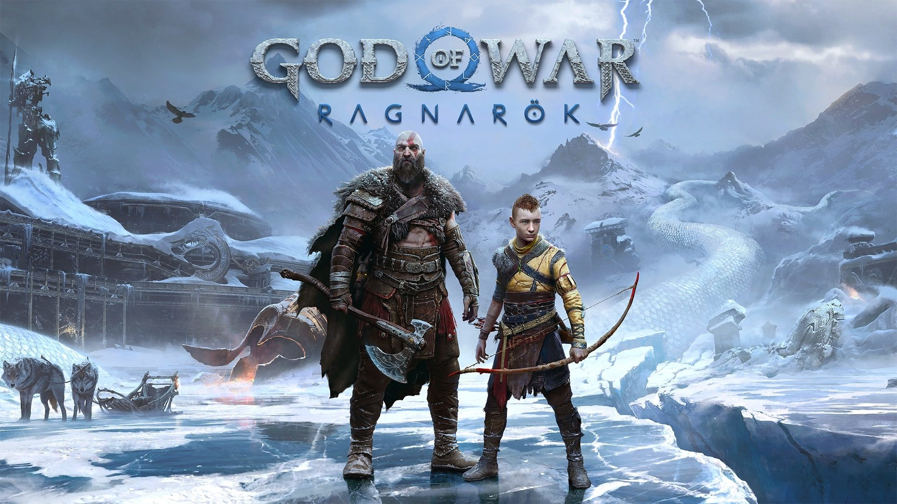

God of War Ragnarök
Description:
God of War Ragnarök is the epic conclusion to the Norse saga of Kratos and Atreus. As Fimbulwinter descends, they must journey through the nine realms to seek answers and prepare for the prophesied battle of Ragnarök. Along the way, they will face new gods, monsters, and challenging choices that will test the bonds between father and son. Explore breathtaking mythical landscapes and engage in visceral combat against formidable foes.
Details:
- Genre: Action-Adventure, Hack and Slash, RPG
- Setting: The nine realms of Norse mythology during Fimbulwinter, leading up to Ragnarök
- Platforms: PlayStation 5, PlayStation 4
- Release Date: November 9, 2022
- Developer: Santa Monica Studio
- Publisher: Sony Interactive Entertainment
- Art Style: Stunningly detailed environments inspired by Norse mythology, with impressive character models and visual effects.
- Key Features:
- A compelling and emotionally resonant narrative continuing the story of Kratos and Atreus
- Exploration of diverse and mythical realms, each with unique environments and challenges
- Visceral and satisfying combat with a variety of weapons and abilities, including the Leviathan Axe and Blades of Chaos
- Encounters with iconic Norse gods and monsters
- Meaningful character development and evolving relationships
- Intriguing puzzles and exploration elements
- A blend of epic scale and intimate storytelling
- Post-launch content including the Valhalla DLC
Price:
Current pricing may vary. Here are some recent examples:
- PlayStation Store (UAE):
- Amazon (UAE): Prices for physical copies may vary. Check listings for current prices.
Always check the official stores for the latest prices and promotions.
learn more.